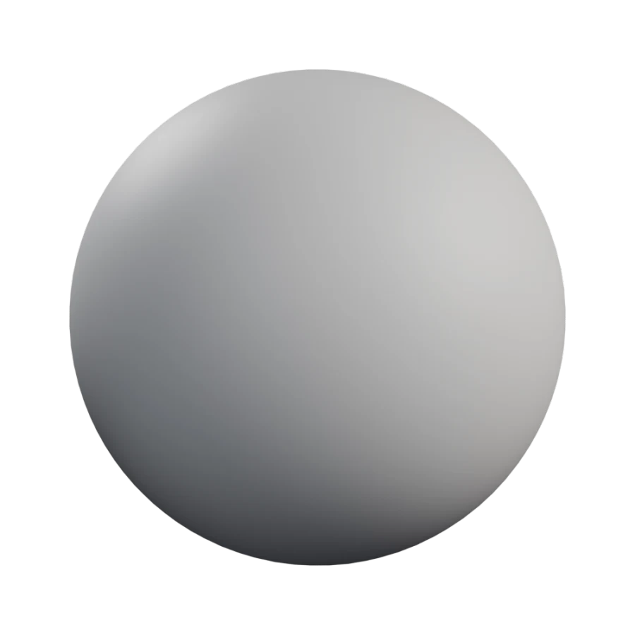
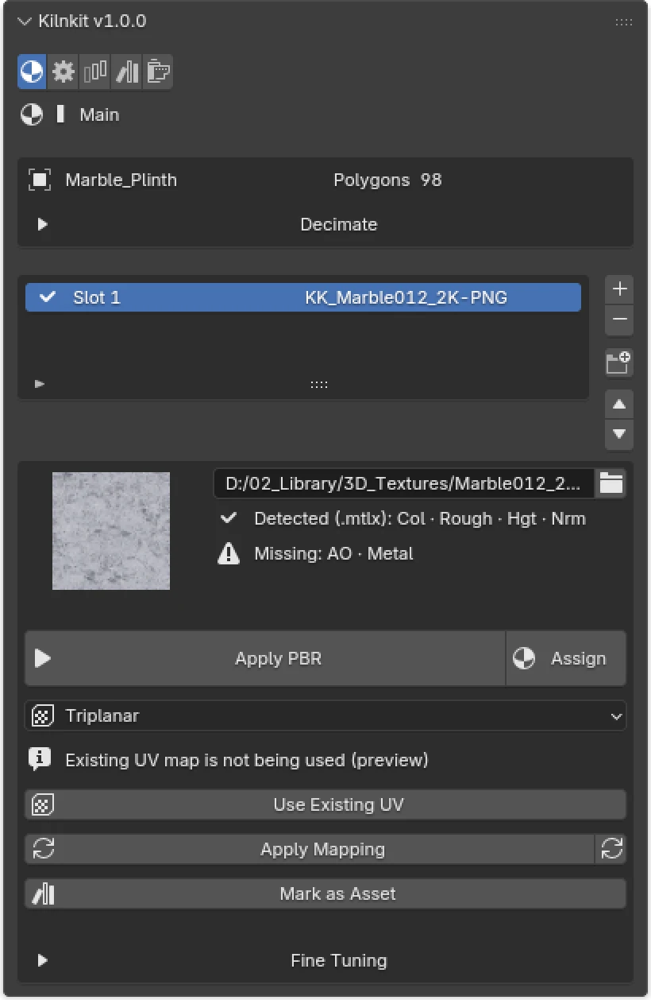
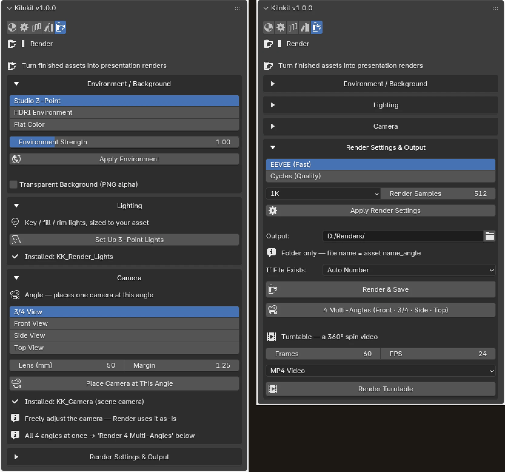
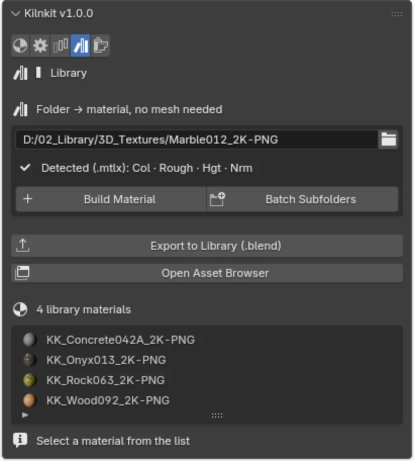
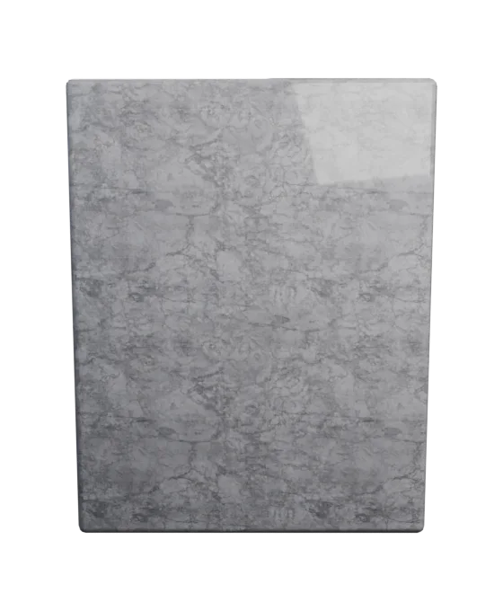
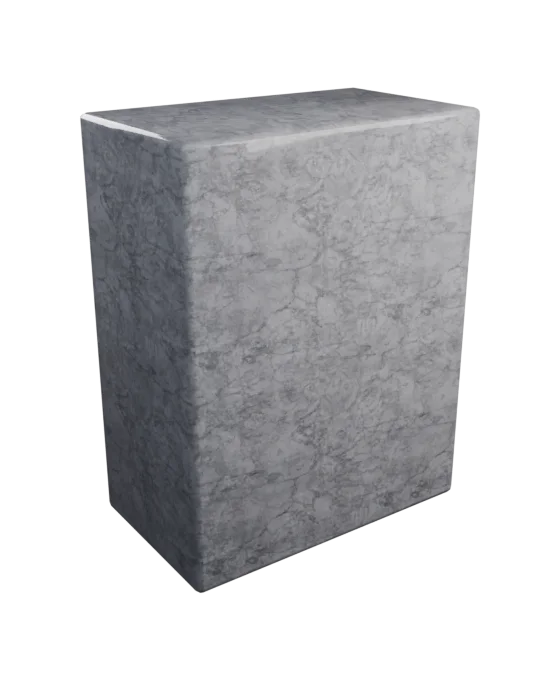
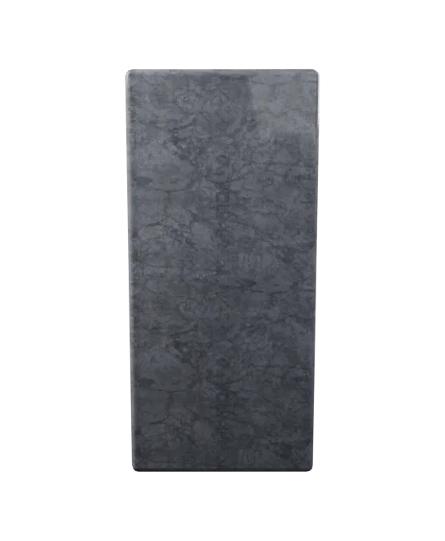
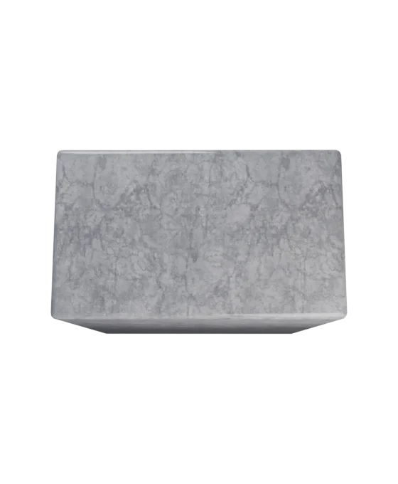

Blender 4.5+ add-on
Texture folder → finished PBR asset. One click.
Kilnkit does the boring part of finishing a Blender asset — scale, texture mapping, node graph, naming, LODs and render output — from a folder you already have. Not a texture generator. Not a material library. A pipeline.
GPL-3.0-or-later · zero dependencies · no network

Drag to turn it
Why it exists
Blender keeps getting bigger. Finishing never got faster.
More editors, more shortcuts, more node systems to learn — and somewhere in there, the boring parts of finishing an asset stayed exactly as slow. After four years of production work, the same chores kept eating the same hours: rescale, unwrap, wire the texture nodes, rename the datablocks, build LODs, set up a camera and a light, render a few angles.
None of it is creative. All of it is repetitive. Kilnkit is the tool I wanted for that.
The pipeline
Point it at a folder. Get back an asset.
Read the folder
A MaterialX .mtlx sidecar is read exactly when it exists. Otherwise filename keywords, suffix-independent. Built-in XML only — nothing to install.
Apply and wire
Scale applied, textures mapped, a Principled BSDF wired. The default is a seam-free triplanar preview that never touches your UVs.
Finish the UVs
Triplanar creates no UV map — so the panel says so, and offers one click to keep the mesh's own UVs or make new ones. Baking and engine export need real UVs.
Name, batch, render
Objects, meshes and materials take one family name. LODs and duplicate cleanup on demand. Then light it, frame it, and render stills or a turntable.

Main — detected channels, mapping, UV status

Render — environment, camera, output

Library — folder to material, no mesh needed
Any folder
The same pipeline, whatever you feed it.


Four folders from ambientCG. Same sphere, same one click, no node editing.
Render output
Lit, framed and rendered without leaving the sidebar.




Four angles, framed and rendered by the add-on. The hero above turns on Kilnkit's own turntable frames.
Accurate detection
Reads .mtlx sidecars for exact channel mapping — no keyword guessing, no GL/DX normal ambiguity.
Six UV modes
Triplanar, Keep Existing UV, Object, Cube, Smart UV, and SLIM auto-seam unwrap.
Live sliders
Texture scale per axis, AO, normal, height — with optional two-way node sync.
Asset library
Build materials straight from folders with no mesh, mark them as assets, export one packed .blend each.
Batch, non-blocking
Process many objects, or import a parent folder as one slot per sub-folder. The UI never freezes.
Render automation
Environment, three-point lighting, auto-framed camera, multi-angle stills, and a 360° turntable.
Editions
Same code. Two builds.
The free build simply omits the render-queue file. There is no runtime lock and no licence check anywhere in the code — the split is the mechanism, so the GPL source stays freely modifiable either way.
| Free | Full | |
|---|---|---|
| Finishing pipeline | Yes | Yes |
.mtlx, sliders, batch | Yes | Yes |
| Render automation | Yes | Yes |
| Turntable video | Yes | Yes |
| Render queue | — | Yes |
Honest scope
What Kilnkit does not do.
- It does not generate or paint textures. Bring your own maps.
- It is not a material library. No pre-made materials ship with it.
- It is not a render farm. The queue runs on your machine.
- It is not an asset manager. It feeds Blender's own asset library rather than replacing it.
Requirements
Nothing to install.
Blender 4.5 LTS or newer. Pure Python using Blender's own API — no PIP packages, no bundled wheels, no external programs. Kilnkit makes no network requests of any kind and works fully offline.